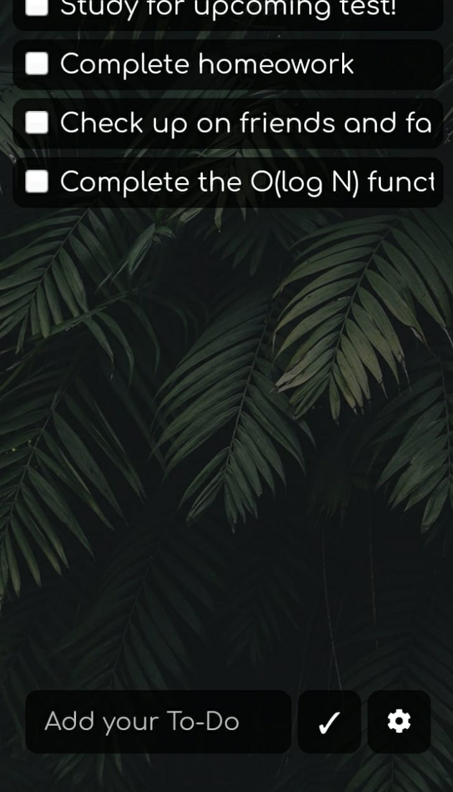
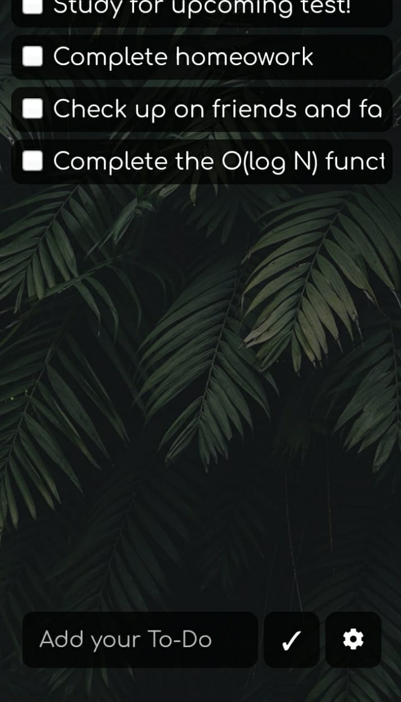

Who created True Do?
What is True Do?
True Do is a Simple {Aesthetic and Zen} To-Do app!
 

Why I built True Do
True Do started as a passion project to solve a simple problem I had - A simple everyday To-Do app, which was clean, easy to use and pleasing to look at! I wanted to build True Do as a commercial app to gain experience in building APIs and Websites. This has been a very fun experience for me. I've learnt a lot as well as getting to know how APIs work. The API itself took around 2 months to make! There were moments where I was banging my head against the wall, but then after taking a break, I would tackle the problem with a clear head.
IT is a very simple app, but for me, that's the beauty of it - the simplicity!